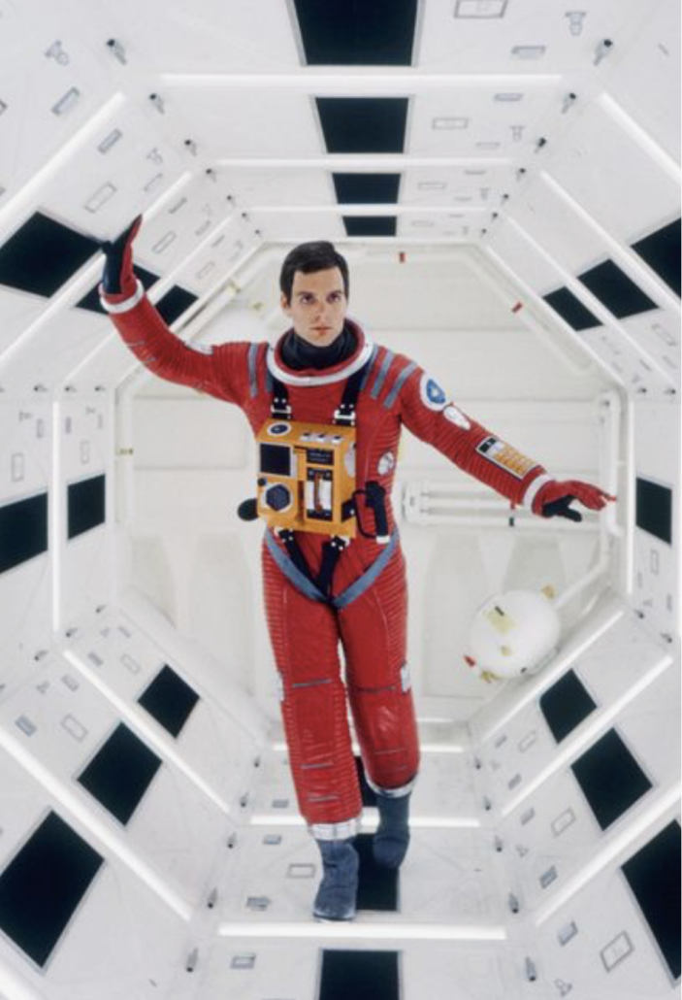

2001 odisea en el espacio
2001: A Space Odyssey (conocida como 2001: Odisea del espacio en Hispanoamérica y 2001: Una odisea del espacio en España) es una película de culto británico-estadounidense del género ciencia ficción y épica dirigida por Stanley Kubrick y estrenada el 3 de abril de 1968. Marcó un hito por su estilo de comunicación visual, sus revolucionarios efectos especiales, su realismo científico y sus proyecciones vanguardistas.
Fue producida por Kubrick para la Metro-Goldwyn-Mayer y contó con Victor Lyndon como productor asociado. El guion fue escrito por el propio Kubrick y por el novelista Arthur C. Clarke, basándose en un cuento de este último titulado El centinela, escrito en 1948 y publicado originalmente en la revista 10 Historias de Fantasía, en 1951.
Su trama se centra en un equipo de astronautas que trata de seguir las señales de radio emitidas por un extraño monolito hallado en la Luna y que parece ser obra de una civilización extraterrestre. El reparto está integrado por Keir Dullea como Dave Bowman, Gary Lockwood como Frank Poole, Douglas Rain como la voz de HAL 9000 y William Sylvester como el Dr. Heywood Floyd.
Es una película de ciencia ficción multitemática, que aborda temas como la evolución humana, la tecnología, la inteligencia artificial y la vida extraterrestre. Se caracteriza por un notable realismo científico, por sus revolucionarios efectos especiales, por algunas de sus ambiguas; en algunos casos, surrealistas, e, incluso, psicodélicas imágenes. La banda sonora incluye música de Richard Strauss (la introducción de Así habló Zaratustra), Johann Strauss Jr. (El Danubio azul), György Ligeti y Aram Jachaturián. La dirección y diseño de los efectos visuales fueron obra de Kubrick y estuvieron supervisados por Wally Veevers.
La cinta fue estrenada el 6 de abril de 1968 en el Cinerama Theatre Broadway de la ciudad de Nueva York. En un inicio, recibió críticas polarizadas, destacándose sobre todo sus efectos visuales y la abstracción de la trama, lo que los críticos tomaron como uno de los puntos débiles de la película. Pero, en la actualidad, es una de las películas más aclamadas de la cinematografía estadounidense y mundial.Sus avanzados efectos especiales la hicieron acreedora de un premio Óscar en dicha categoría.En 1991, la película fue considerada «cultural, histórica y estéticamente significativa» por la Biblioteca del Congreso de Estados Unidos y seleccionada para su preservación en el National Film Registry. Forma parte, además, del AFI's 10 Top 10 en la categoría de «ciencia ficción»
1968